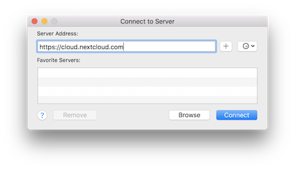

WebDAV kullanarak Nextcloud dosyalarına erişmek
Nextcloud, WebDAV iletişim kuralını tam olarak destekler ve Nextcloud Dosyalar uygulamasına WebDAV üzerinden bağlanıp eşitlemenizi sağlar. Bu bölümde Linux, macOS, Windows ve mobil aygıtları WebDAV aracılığıyla Nextcloud sunucunuza nasıl bağlayacağınızı öğreneceksiniz.
WebDAV stands for Distributed Authoring and Versioning. It is an HTTP extension that makes it easy to create, read, and edit files hosted on remote Web servers. With a WebDAV client, you can access your Nextcloud Files (including shares) on Linux, macOS and Windows in a similar way as any remote network share, and stay synchronized.
WebDAV yapılandırmasına başlamadan önce, istemci aygıtları Nextcloud sunucularınıza bağlamanın önerilen yoluna hızlı bir göz atalım.
Resmi Nextcloud masaüstü ve mobil istemcileri
Bir masaüstü bilgisayarı bir Nextcloud sunucusuyla eşitlemenin önerilen yolu, Resmi Nextcloud eşitleme istemcilerini kullanmaktır. İstemciyi dosyaları herhangi bir yerel klasöre kaydedecek şekilde yapılandırabilir ve Nextcloud sunucusunda hangi klasörlerle eşitleneceğini seçebilirsiniz. İstemci var olan bağlantı durumunu görüntüler ve yapılan tüm işlemleri günlüğe kaydeder. Böylece her zaman bilgisayarınıza hangi uzak dosyaların indirildiğini bilirsiniz ve yerel bilgisayarınızda oluşturulan ve güncellenen dosyaların sunucu ile düzgün bir şekilde eşitlendiğini doğrulayabilirsiniz.
Android ve Apple iOS aygıtlarını eşitlemenin önerilen yolu, resmi Nextcloud mobil uygulamalarını kullanmaktır.
Resmi Nextcloud uygulamalarını bir Nextcloud sunucusuna bağlamak için, tarayıcınızdan Nextcloud kopyanıza erişmek için kullandığınız adresi kullanın. Örnek:
https://cloud.example.com
https://example.com/nextcloud (if Nextcloud is installed in a subdirectory called "nextcloud")
Üçüncü taraf WebDAV istemcileri
İsterseniz, bilgisayarınızla Nextcloud sunucunuz arasında bağlantı kurmak için WebDAV iletişim kuralını (işletim sisteminizde yerleşik olanlar ile birlikte) destekleyen herhangi bir üçüncü taraf istemci kullanabilirsiniz.
Mobil aygıtnızla Nextcloud bağlantısı kurmak için üçüncü taraf WebDAV özellikli uygulamaları da kullanabilirsiniz.
Üçüncü taraf istemcileri kullanırken, bunların Nextcloud ile kullanılmak için ayarlanmamış olabileceğini ya da kullanımınız için önemli olduğunu düşündüğünüz özelliklerin bulunmayabileceğini unutmayın.
Nextcloud topluluk üyelerinin kullandıklarını bildirdiği mobil istemciler şunlardır:
Üçüncü taraf uygulamalar ile Nextcloud bağlantısı yapılandırılırken kullanılacak adres, resmi istemcilere göre biraz daha uzundur:
https://cloud.example.com/remote.php/dav/files/USERNAME/
https://example.com/nextcloud/remote.php/dav/files/USERNAME/ (if Nextcloud is installed in a subdirectory called "nextcloud")
Not
When using a third-party WebDAV client (including your operating system’s built-in client), you should use an application password for login rather than your regular password. In addition improved security, this increases performance significantly. To configure an application password, log into the Nextcloud Web interface, click on the avatar in the top right and choose Personal settings. Then choose Security in the left sidebar and scroll to the very bottom. There you can create an app password (which can also be revoked in the future without changing your main user password).
Not
Aşağıdaki örneklerde, ornek.com/nextcloud yerine Nextcloud sunucunuzun adresini (kurulumunuz etki alanınızın kök klasöründeyse klasör bölümünü atlayın) ve KULLANICI ADI yerine bağlantı kuran kullanıcının kullanıcı adını yazmalısınız.
Nextcloud kopyanızdaki WebDAV adresine (ayarlarda sol altta) bakın.
Linux kullanarak dosyalara erişmek
Linux işletim sistemlerindeki dosyalara aşağıdaki yöntemleri kullanarak erişebilirsiniz.
Nautilus dosya yöneticisi
Nextcloud hesabınızı `GNOME Control Center <../groupware/sync_gnome.html>`_ içinden yapılandırdığınızda, **dosya erişimi seçeneğini kaldırmadığınızda, dosyalarınız Nautilus tarafından otomatik olarak bir WebDAV paylaşımı olarak eklenir.
Ayrıca Nextcloud dosyalarınızı el ile de ekleyebilirsiniz. Nautilus dosya yöneticisini Nextcloud paylaşımınıza bağlamak için davs:// iletişim kuralını kullanın:
davs://example.com/nextcloud/remote.php/dav/files/USERNAME/
Not
Sunucu bağlantınızın HTTPS ile güvenliği sağlanmamışsa, davs:// yerine dav:// kullanın:

Not
Aynı yöntem, MATE Caja ve Cinnamon Nepo gibi GVFS kullanan diğer dosya yöneticileri için de geçerlidir.
KDE ve Dolphin dosya yöneticisi ile dosyalara erişmek
KDE Dolphin dosya yöneticisini kullanarak Nextcloud dosyalarınıza erişmek için webdav:// iletişim kuralını kullanın:
webdav://example.com/nextcloud/remote.php/dav/files/USERNAME/

Nextcloud sunucunuzla kalıcı bir bağlantı oluşturabilirsiniz:
Dolphin uygulamasını açın ve sol taraftaki “Yerler” sütunundaki “Ağ” üzerine tıklayın.
Ağ klasörü ekle etiketli simgeye tıklayın. Açılan pencerede, WebDAV zaten seçilmiş olarak görünmelidir.
WebDAV seçili değilse seçin.
Sonraki üzerine tıklayın.
Şu ayarları yazın:
Ad: Yerler altında görmek istediğiniz ad. Örnek: Nextcloud.
Kullanıcı: Oturum açmak için kullanılacak Nextcloud kullanıcı adı. Örnek: admin.
Sunucu: Nextcloud etki alanı adı. Örnek: ornek.com (başında http:// sonunda klasörler olmadan).
Klasör –
nextcloud/remote.php/dav/files/KULLANICIADI/yolunu yazın.
(İsteğe bağlı) Yerler sütununda bir yer işaretinin görüntülenmesi için “Simge oluştur” kutusunu işaretleyin.
(İsteğe bağlı) “Bağlantı noktası ve şifreli” kutusunda herhangi bir özel ayar veya bir SSL sertifikası belirtin.
Linux komut satırından WebDAV bağlantıları oluşturmak
Linux komut satırından da WebDAV bağlantıları oluşturabilirsiniz. Nextcloud üzerine diğer herhangi bir uzak dosya sistemi bağlamasıyla aynı şekilde erişmeyi yeğliyorsanız bu kullanım daha uygun olabilir. Aşağıdaki örnek, kişisel bir bağlamanın nasıl oluşturulacağını ve Linux bilgisayarınızda her oturum açtığınızda otomatik bağlanmayı gösterir.
WebDAV paylaşımlarını diğer herhangi bir uzak dosya sistemi gibi bağlamanızı sağlayan
davfs2WebDAV dosya sistemi sürücüsünü yükleyin. Debian/Ubuntu üzerine kurmak için şu komutu kullanın:apt-get install davfs2
CentOS, Fedora ve openSUSE üzerine kurmak için şu komutu kullanın:
yum install davfs2
Kendinizi
davfs2grubuna ekleyin:usermod -aG davfs2 <username>
Ardından, bağlama noktası için ana klasörünüzde bir
nextcloudklasörü ve kişisel yapılandırma dosyanız için de.davfs2/klasörü oluşturun:mkdir ~/nextcloud mkdir ~/.davfs2
/etc/davfs2/secretsdosyasını~/.davfs2klasörüne kopyalayın:cp /etc/davfs2/secrets ~/.davfs2/secrets
Dosyanın sahibi olarak kendinizi ayarlayın ve yalnızca sahip için okuma ve yazma izinleri verin:
chown <linux_username>:<linux_username> ~/.davfs2/secrets chmod 600 ~/.davfs2/secrets
Nextcloud oturum açma kimlik doğrulama bilgileriniz olan Nextcloud sunucu adresinizi, kullanıcı adınızı ve parolanızı
secretsdosyasının sonuna ekleyin:https://example.com/nextcloud/remote.php/dav/files/USERNAME/ <username> <password> or $PathToMountPoint $USERNAME $PASSWORD for example /home/user/nextcloud john 1234
Bağlama bilgilerini
/etc/fstabdosyasına ekleyin:https://example.com/nextcloud/remote.php/dav/files/USERNAME/ /home/<linux_username>/nextcloud davfs user,rw,auto 0 0
Ardından, aşağıdaki komutu yürüterek bağlanmanın gerçekleştiğini ve kimliğin doğrulandığından emin olun. Doğru ayarlarsanız, root izinlerine gerek duyulmaz:
mount ~/nextcloud
Ayrıca bağlanmayı sonlandırabilmelisiniz:
umount ~/nextcloud
Artık Linux sisteminizde her oturum açtığınızda, Nextcloud paylaşımınız WebDAV aracılığıyla otomatik olarak ~/nextcloud klasörünüze bağlanmalıdır. El ile bağlamayı yeğlerseniz, /etc/fstab içindeki auto ögesini noauto olarak değiştirin.
Bilinen sorunlar
Sorun
Kaynağa geçici olarak erişilemiyor
Çözüm
Klasörde bir dosya oluştururken sorun yaşarsanız, /etc/davfs2/davfs2.conf dosyasını düzenleyin ve şunu ekleyin:
use_locks 0
Sorun
Sertifika uyarıları
Çözüm
Kendinden imzalı bir sertifika kullanırsanız bir uyarı alırsınız. Bu durumu değiştirmek için davfs2 yapılandırmanızı sertifikanızı tanıyacak şekilde değiştirmeniz gerekir. mycertificate.pem dosyasını /etc/davfs2/certs/ klasörüne kopyalayın. Ardından /etc/davfs2/davfs2.conf dosyasını düzenleyin ve servercert satırının başındaki yorum işaretini kaldırın. Şimdi bu örnekte olduğu gibi sertifikanızın yolunu ekleyin:
servercert /etc/davfs2/certs/mycertificate.pem
macOS kullanarak dosyalara erişmek
Not
macOS Finder için bir dizi uygulama sorunu vardır ve Nextcloud sunucusu yalnızca Apache ve mod_php ya da Nginx 1.3.8+ üzerinde çalışıyorsa kullanılmalıdır . WebDAV paylaşımlarına erişebilen alternatif macOS uyumlu istemciler, Cyberduck (buradaki yönergelere bakın <https://docs.nextcloud.com/server/latest/user_manual /files/access_webdav.html#accessing-files-using-cyberduck>`_) ve Filezilla gibi açık kaynaklı uygulamaları içerir. Ticari istemciler arasında ise Mountain Duck, Forklift, Transmit ve Commander One bulunur.
Dosyalara macOS Finder üzerinden erişmek:
Finder üst menü çubuğundan Git > Sunucuya Bağlan…’ komutunu seçin:

Sunucuya Bağlan… penceresi açıldığında, Sunucu Adresi: alanına Nextcloud sunucunuzun WebDAV adresini yazın. Yani:
https://cloud.YOURDOMAIN.com/remote.php/dav/files/USERNAME/
Bağlan’ üzerine tıklayın. WebDAV sunucunuz Masaüstünde paylaşılan bir disk sürücüsü olarak görünmelidir.
Dosyalara Microsoft Windows üzerinden erişmek
Yerel Windows WebDAV uygulamasını kullanıyorsanız, Dosya Gezginini kullanarak Nextcloud sunucunuzu yeni bir sürücü olarak eşleyebilirsiniz. Bir sürücü eşlemek, bir Nextcloud sunucusunda depolanan dosyalara, eşlenmiş bir ağ sürücüsünde bulunan dosyalara yaptığınız gibi göz atabilmenizi sağlar.
Bu özelliğin kullanılması için ağ bağlantısı gereklidir. Dosyalarınızı çevrimdışı olarak depolamak istiyorsanız, Nextcloud hesabınızdaki tüm dosyaları yerel sabit sürücünüzdeki bir veya daha fazla klasörle eşitlemek için Masaüstü istemcisini kullanın.
Not
Sürücünüz eşleştirilmeden önce HTTPS etkinleştirildiyse, Windows 10 varsayılan olarak temel kimlik doğrulama kullanmaya izin verecek şekilde ayarlanmıştır.
Daha eski Windows sürümlerinde, Windows kayıt defterini açarak temel kimlik doğrulamasının kullanılmasına izin vermelisiniz:
regedituygulamasını açarakHKEY_LOCAL_MACHINE\SYSTEM\CurrentControlSet\Services\WebClient\Parametersanahtarını bulun.BasicAuthLevel(Windows Vista, 7 ve 8) ya daUseBasicAuth(Windows XP ve Windows Server 2003),DWORDdeğerini yoksa oluşturun veya varsa düzenleyin ve değer verisini1olarak ayarlayın. SSL bağlantıları için.0değeri, Temel kimlik doğrulamasının devre dışı bırakıldığı anlamına gelir ve2değeri, hem SSL hem de SSL olmayan bağlantılara izin verir (önerilmez).Kayıt defteri uygulamasından çıkıp bilgisayarı yeniden başlatın.
Komut satırından sürücüleri eşleme
Aşağıdaki örnek, bir sürücünün komut satırı kullanılarak nasıl eşleneceğini gösterir. Sürücüyü eşlemek için:
Windows komut istemini açın.
Bilgisayarı Z sürücüsüyle eşlemek için komut istemine aşağıdaki satırı yazın:
net use Z: https://<drive_path>/remote.php/dav/files/USERNAME/ /user:youruser yourpassword
Nextcloud sunucunuzun adresi olarak <drive_path> ile. Örneğin:
net use Z: https://example.com/nextcloud/remote.php/dav/files/USERNAME/ /user:youruser yourpassword
Bilgisayar, Nextcloud hesabınızın dosyalarını Z sürücü harfiyle eşler.
Not
Sistem hatası 67 oluştu. Ağ adı bulunamadı iletisini görürseniz, Hizmetler uygulamasını açın ve WebClient hizmetinin çalıştığından ve başlangıçta otomatik olarak çalıştırıldığından emin olun.
Not
Önerilmese de, Nextcloud sunucusunu HTTP kullanarak da bağlayabilir ve bağlantıyı şifrelenmemiş olarak bırakabilirsiniz.
Herkese açık alanlardaki aygıtlarla HTTP bağlantıları kullanmayı planlıyorsanız, kesinlikle gerekli güvenliği sağlamak için bir VPN tüneli kullanmanızı öneririz.
Alternatif komut sözdizimi:
net use Z: \\example.com@ssl\nextcloud\remote.php\dav /user:youruser
yourpassword
Dosya Gezgini ile sürücüleri eşlemek
Microsoft Dosya Gezginini kullanarak bir sürücüyü eşlemek için:
Windows bilgisayarınızdaki Dosya Gezgini uygulamasını açın.
Bu bilgisayar simgesine sağ tıklayın ve açılır menüden Ağ sürücüsüne bağlan… ögesini seçin.
Nextcloud eşlemesi için istediğiniz yerel ağ sürücüsünü seçin.
Nextcloud bulut sunucunuzun adresini yazın ve sonuna /remote.php/dav/files/KULLANICIADI/ bölümünü ekleyin.
Örnek:
https://example.com/nextcloud/remote.php/dav/files/USERNAME/
Not
SSL ile korunan sunucular için, sonraki yeniden başlatmalarda eşlemenin kalıcı olacağından emin olmak için Oturum açıldığında yeniden bağlan seçeneğini işaretleyin. Nextcloud sunucusuna farklı bir kullanıcı olarak oturum açmak istiyorsanız, Farklı kimlik bilgileri kullanarak bağlan seçeneğini işaretleyin.

Sondüğmesine tıklayın.
Dosya Gezgini, ağ sürücüsünü eşleyerek Nextcloud kopyanızı kullanmanızı sağlar.
Cyberduck kullanarak dosyalara erişmek
Cyberduck macOS ve Windows üzerinde dosya aktarımları için tasarlanmış açık kaynaklı bir FTP, SFTP, WebDAV, OpenStack Swift ve Amazon S3 tarayıcısıdır.
Not
Bu örnekte, Cyberduck 4.2.1 sürümü kullanılmıştır.
Cyberduck kullanmak için:
Önünde bir iletişim kuralı bilgisi olmadan bir sunucu belirtin.
Örneğin: òrnek.com`
Uygun bağlantı noktasını belirtin.
Seçtiğiniz bağlantı noktası, Nextcloud sunucunuzun SSL destekleyip desteklemediğine bağlı olarak değişir. Cyberduck, SSL kullanmayı planlıyorsanız farklı bir bağlantı türü seçmenizi gerektirir. Örneğin:
- Örneğin:
Şifrelenmemiş WebDAV için
80Güvenli WebDAV için
443(HTTPS/SSL)
WebDAV adresinizin kalanını ‘Yol’ alanına eklemek için ‘Diğer Seçenekler’ açılır menüsünü kullanın.
Örneğin:
remote.php/dav/files/KULLANICIADI/
Böylece Cyberduck, Nextcloud sunucusundaki dosyalara erişmiş olur.
Bilinen sorunlar
Sorun
Windows, HTTPS kullanarak bağlantı kuramıyor.
1. çözüm
Windows WebDAV İstemcisi, şifreli bağlantılarda sunucu adı gösterimini (SNI) desteklemeyebilir. SSL ile şifrelenmiş bir Nextcloud kopyası kurarken bir hatayla karşılaşırsanız, SSL tabanlı sunucunuza bir sabit IP adresi ataması için hizmet sağlayıcınızla görüşün.
2. çözüm
Windows WebDAV İstemcisi, TLSv1.1 ve TLSv1.2 bağlantılarını desteklemeyebilir. Sunucu yapılandırmanızı yalnızca TLSv1.1 ve üzerini sunacak şekilde kısıtladıysanız, sunucunuzla bağlantı kurulamayabilir. Ayrıntılı bilgi almak için WinHTTP belgelerine bakabilirsiniz.
Sorun
Şu hata iletisini görüyorsunuz: Hata 0x800700DF: Dosya boyutu izin verilen sınırı aşıyor ve kaydedilemiyor.
Çözüm
Windows, WebDAV paylaşımı ile alınabilecek ya da gönderilebilecek bir dosyanın en büyük boyutunu sınırlar. Değiştir üzerine tıklayarak HKEY_LOCAL_MACHINE\SYSTEM\CurrentControlSet\Services\WebClient\Parameters altındaki FileSizeLimitInBytes değerini artırabilirsiniz.
Sınırı olabilecek en büyük 4 GB değerine çıkarmak için Ondalık seçin, 4294967295 değerini yazın ve Windows’u ya da WebClient hizmetini yeniden başlatın.
Sorun
Yukarıda açıklanan adımlarla Windows üzerinde bir WebDAV sürücüsü eklemek, Nextcloud kullanılabilir alanının doğru boyutunu göstermez. Kullanılabilecek alan olarak C: sürücüsünün boyutunu görüntüler.
Yanıt
Ne yazık ki bu, WebDAV tarafından kaynaklanan bir sınırlamadır, çünkü istemcinin sunucudan kullanılabilir boş alanı almasının bir yolu yoktur. Windows, bunun yerine otomatik olarak C: sürücüsünün boyutunu kullanılabilir alanla birlikte görüntüler. Yani ne yazık ki bu sorunun gerçek bir çözümü yok.
Sorun
Dosyalarınıza WebDAV aracılığıyla Microsoft Office üzerinden erişilemiyor.
Çözüm
Bilinen sorunlara ve çözümlerine KB2123563 makalesinde değinilmiştir.
Sorun
Nextcloud bir kendinden imzalı sertifika kullanıyorken Windows üzerinde bir WebDAV sürücüsü olarak eşlenemiyor.
Çözüm
Alışık olduğunuz tarayıcı ile Nextcloud kopyanıza erişin.
Tarayıcı durum satırında sertifika hatasına ulaşana kadar tıklayın.
View the certificate, then from the Details tab, select ‘Copy to File’.
Masaüstüne
NextcloudSertifikam.pemgibi rastgele bir adla kaydedin.Go to Start menu > Run, type MMC, and click ‘OK’ to open Microsoft Management Console.
Dosya > Ek Bileşen Ekle/Kaldır üzerine tıklayın.
Select Certificates, Click ‘Add’, choose ‘My User Account’, then ‘Finish’, and finally ‘OK’.
Güvenilen Kök Sertifika Yetkilileri, Sertifikalar bölümüne gidin.
Sertifikaya sağ tıklayın, Tüm Görevleri Seç ve İçe Aktar üzerine tıklayın.
Masaüstüne kaydettiğiniz sertifika dosyasını seçin.
Tüm Sertifikaları Aşağıdaki Mağazaya Yerleştir komutunu seçin ve Göz at üzerine tıklayın.
Check the Box that says Show Physical Stores, expand out Trusted Root Certification Authorities, select Local Computer there, click ‘OK’, and Complete the Import.
Yeni sertifikanın göründüğünden emin olmak için listeye bakın. Büyük olasılıkla sertifikanın listede görüntülenmesi için görünümü yenilemeniz gerekecek.
Exit MMC.
Firefox kullanıcıları için:
Tarayıcınızı açın, Uygulama menüsü > Geçmiş > Yakın geçmişi temizle… üzerine tıklayın.
‘Temnizlenecek zaman aralığı’ açılan kutusunu ‘Her şey’ olarak ayarlayın
‘Etkin oturumlar’ kutusunu işaretleyin
‘Şimdi temizle’ düğmesine tıklayın
Tarayıcıyı kapatın ve denemek için yeniden başlatın.
Chrome temelli tarayıcı kullanıcıları için (Chrome, Chromium, Microsoft Edge):
Windows Denetim Masasını açıp İnternet Seçenekleri bölümüne gidin
İçerik sekmesinden SSL Durumunu Temizle düğmesine tıklayın.
Tarayıcıyı kapatın ve denemek için yeniden başlatın.
cURL kullanarak dosyalara erişmek
WebDAV bir HTTP uzantısı olduğundan, cURL betik dosyası işlemleri için kullanılabilir.
Not
Ayarlar → Yönetim → Paylaşım → Bu sunucudaki kullanıcılar diğer sunuculara paylaşım gönderebilsin seçeneğini etkinleştirin. Bu seçenek --header "X-Requested-With: XMLHttpRequest" seçeneğini devre dışı bırakıyorsa cURL üzerine aktarılması gerekir.
Adı geçerli tarih olan bir klasör oluşturmak için:
$ curl -u user:pass -X MKCOL "https://example.com/nextcloud/remote.php/dav/files/USERNAME/$(date '+%d-%b-%Y')"
Bu klasöre error.log dosyasını yüklemek için:
$ curl -u user:pass -T error.log "https://example.com/nextcloud/remote.php/dav/files/USERNAME/$(date '+%d-%b-%Y')/error.log"
Bir dosyayı taşımak için:
$ curl -u user:pass -X MOVE --header 'Destination: https://example.com/nextcloud/remote.php/dav/files/USERNAME/target.jpg' https://example.com/nextcloud/remote.php/dav/files/USERNAME/source.jpg
Kök klasördeki dosyaların özelliklerini almak için:
$ curl -X PROPFIND -H "Depth: 1" -u user:pass https://example.com/nextcloud/remote.php/dav/files/USERNAME/ | xml_pp
<?xml version="1.0" encoding="utf-8"?>
<d:multistatus xmlns:d="DAV:" xmlns:oc="http://nextcloud.org/ns" xmlns:s="http://sabredav.org/ns">
<d:response>
<d:href>/nextcloud/remote.php/dav/files/USERNAME/</d:href>
<d:propstat>
<d:prop>
<d:getlastmodified>Tue, 13 Oct 2015 17:07:45 GMT</d:getlastmodified>
<d:resourcetype>
<d:collection/>
</d:resourcetype>
<d:quota-used-bytes>163</d:quota-used-bytes>
<d:quota-available-bytes>11802275840</d:quota-available-bytes>
<d:getetag>"561d3a6139d05"</d:getetag>
</d:prop>
<d:status>HTTP/1.1 200 OK</d:status>
</d:propstat>
</d:response>
<d:response>
<d:href>/nextcloud/remote.php/dav/files/USERNAME/welcome.txt</d:href>
<d:propstat>
<d:prop>
<d:getlastmodified>Tue, 13 Oct 2015 17:07:35 GMT</d:getlastmodified>
<d:getcontentlength>163</d:getcontentlength>
<d:resourcetype/>
<d:getetag>"47465fae667b2d0fee154f5e17d1f0f1"</d:getetag>
<d:getcontenttype>text/plain</d:getcontenttype>
</d:prop>
<d:status>HTTP/1.1 200 OK</d:status>
</d:propstat>
</d:response>
</d:multistatus>
WinSCP kullanarak dosyalara erişmek
WinSCP <https://winscp.net/eng/docs/introduction/>, Windows için açık kaynaklı, ücretsiz bir SFTP, FTP, WebDAV, S3 ve SCP istemcisidir. Ana işlevi, yerel ve uzak bilgisayar arasında dosya aktarımı yapmaktır. Bunun ötesinde WinSCP, betik çalıştırma ve temel dosya yönetimi işlevleri sunar.
Portable WinSCP sürümünü <https://winscp.net/eng/downloads.php/>’ indirebilir ve Wine ile Linux üzerinde çalıştırabilirsiniz.
WinSCP uygulamasını Linux üzerinde çalıştırmak için, dağıtımınızın paket yöneticisinden wine uygulamasını indirin. Ardından şu komutla çalıştırın: wine WinSCP.exe.
Nextcloud bağlantısı kurmak için:
WinSCP uygulamasını başlatın
Menüden ‘Oturum’ seçin
‘Yeni oturum’ üzerine tıklayın
‘Dosya iletişim kuralı’ seçeneğini WebDAV olarak ayarlayın
‘Şifreleme’ seçeneğini TLS/SSL örtülü şifreleme olarak ayarlayın
Sunucu adı alanını doldurun:
ornek.comKullanıcı adı alanını doldurun:
NEXTCLOUDKULLANICIADIParola alanını doldurun:
NEXTCLOUDPAROLASI‘Gelişmiş…’ düğmesine tıklayın
Sol taraftan ‘Ortam’, ‘Klasörler’ bölümüne gidin
‘Uzak klasör’ alanını şu şekilde doldurun:
/nextcloud/remote.php/dav/files/NEXTCLOUDKULLANICIADI/‘Tamam’ düğmesine tıklayın
‘Kaydet’ düğmesine tıklayın
İstediğiniz seçenekleri ayarlayın ve ‘Tamam’ düğmesine tıklayın
Nextcloud bağlantısı kurmak için ‘Oturum aç’ düğmesine tıklayın
Not
It is recommended to use an app password for the password if you use TOTP as WinSCP does not understand TOTP with Nextcloud at the time of writing (2022-11-07).